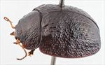
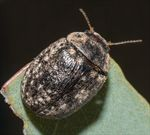
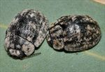
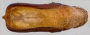
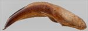
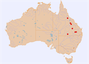

Click on images to enlarge
{kind=link}

Male, Clermont, Central Queensland
{kind=link}

Female, Clermont, Central Queensland
{kind=link}

Males, Cunnamulla, southern Queensland
{kind=link}

Aedeagus, dorsal view (Greenvale, North Queensland)
{kind=link}

Aedeagus, lateral view (Greenvale, North Queensland)
{kind=link}

Distribution
Name
Trachymela sp. Ta52
Reference specimen
1998-0694, Clermont, Central Queensland.
Adult Description
Length: ♀ 7.5-8.5 mm [6], ♂ 6.8-7.6 mm [8].
Colour: head frons very dark reddish-brown or black, clypeus similar or black, labrum black with lateral or anterior edges usually straw-brown or (less often) fully straw-brown; mandibles black; antennomeres 1-3 light to mid-brown, 4-6 grading darker, 7-11 much darker, often black; pronotum: uniformly very dark glossy brown or black, similar shade as frons of head; scutellum: black; elytra: disc very dark brown or black, glossy, same or sometimes a fractionally lighter shade than pronotum, marginal area sometimes fractionally paler, disc sometimes with many small scattered patches of slightly paler shade coinciding with non-elevated interstices, punctures are similar in colour or slightly darker than interstices, humeral callus black; venter: black or very dark reddish-brown, inside surface of elytral epipleura black. Cuticular wax: a mixture of grey and light-brown; thick layers of grey on head, in foveal and lateral marginal areas of pronotum and marginal region of elytra, as small clumps on anterior edge of elytra (just above humeral callus) and in antero-median depression with smaller and less concentrated clumps in posterior third of elytra, spaced longitudinally a short distance from suture, wisps of brown dust that often seem to overlie or border grey areas are present on pronotum and elytra. The very uneven coverage produces a strong contrast with the black surface of the elytra that is exposed in many areas.
Shape: slightly flattened, greatest height viewed laterally is a little in front of middle of elytral margin, dorsal surface with only a slight discontinuity in curvature between pronotum and elytra; Head; quite coarsely and slightly unevenly punctured (pd~2-2.5xef), sometimes surface very uneven, almost obliterating punctures. Antennae short (AL ♂=37-39%BL, ♀=34.9%BL), filiform. Pronotum; almost evenly curved transversely, foveal depression absent, an often almost inconspicuous small wart-like elevation usually present in centre of foveal area, puncturation on disc clearly impressed, moderately sized, evenly and quite densely distributed in discal area, becoming considerably coarser from level of inner edge of eye to lateral margins, interstices smooth or slightly raised in discal area. Front margins join lateral margins in a smoothly rounded right-angle, with lateral margin curving smoothly and gradually towards rear margin. Scutellum; lighly punctured, often more densely near anterior edge, with punctures similar in size but shallower than those on adjacent area of pronotum. Elytra; surface evenly curved transversely, lightly curved longitudinally in anterior 90%, after which curvature increases noticeably, posterior angle slightly less than 90°, antero-lateral depression barely discernable or absent, punctures moderate in size and distinct in anterior half of disc, surface more granular in posterior half, verrucae are not very elevated nor aligned in longitudinal series but scattered relatively evenly over most of discal surface, individual verrucae are similar in size, though sometimes merge with adjacent ones to form extended ridges, especially in angle between scutellum and humeral callus, posterior third of margins noticeably concave, often with a short row of pimple-like verrucae along its middle, posterior portion of elytral suture carinate, surface continuous or very slightly discontinuous under humeral callus. Vertical extension of epipleura moderate (HCE/PW=0.33-0.37). Venter; Prosternal process almost parallel-sided and broad, sometimes fractionally narrower anteriorly, open or very lightly closed anteriorly, short setae scattered lightly over prosternal process and mesosternum, a single seta on anterior and median trochanter; front edge of metasternum beveled, truncate; inner edge of epipleura setose posteriorly, generally little further than anterior edge of 3rd abdominal segment. Aedeagus; short (LPE=23-27%BL), in dorsal view, from basal sulcus initially parallel-sided before widening slightly so that widest point is near front of ostium, then converging smoothly but rapidly towards apex, so that anterior is almost perpendicular to long axis adjacent to apex, edges adjacent to apex sometimes very slightly crenulate, dorsal surface lightly sclerotized with dorso-median channel short and faint, short dorsolateral channels present adjacent to ostium; tip small, protruding and almost triangular, ostial opening wider than long, posterior shaped as a broad triangle with apex at centre, the dorsal flaps extend to its apical edge when extended; in lateral view, lightly and quite evenly curved throughout, thinning towards apex over 15% of length, tip deflexed, flagellum almost invariably broken off.
Larvae
unknown.
Eggs
unknown.
Similar species
Ta57 has a wide distribution in eastern Australia and is also very difficult to differentiate from Ta51. It tends to have larger punctures and slightly larger, more elevated and discrete verrucae, but these differences are subtle and difficult to use in practice. The aedeagus of Ta57 is clearly different and provides the only reliable distinguishing character.
Ta51 - a northern Queensland species that is very similar in external morphology to Ta52, though it tends to have elytra with verrucae that are better defined than in Ta52. Ta51 has shorter antennae, the setae on the epipleura are absent or very sparse and its aedeagus is slighly lanceolate in shape, with its widest point further back and it has a much larger spatulum.
Notes
Almost all specimens of Ta52 whose host is recorded have been found on ironbarks (Eucalyptus : Adnataria), including E. fibrosa nubilis. The exceptions to this are two male specimens collected from E. coolabah near Cunnamulla in southern Queensland. The aedeagus of these specimens is slightly narrower than is typical for Ta52, and its apex is noticeably more smoothly rounded than is the case for more typical specimens. Though in external appearance these specimens are indistinguishable from typical Ta52, they are both slightly smaller than other males of this species. It is possible that these two specimens are another, closely related species, but more material is required to confirm this.
The most northerly specimen (from Greenvale) has an aedeagus that is slightly blunter than that of the other specimens examined, its anterior edge on either side of apex being approximately at right-angles to the long axis of the aedeagus. However, in other characters it fits well within the range of variation of the more southerly specimens of Ta52.
Copyright © 2026. All rights reserved.